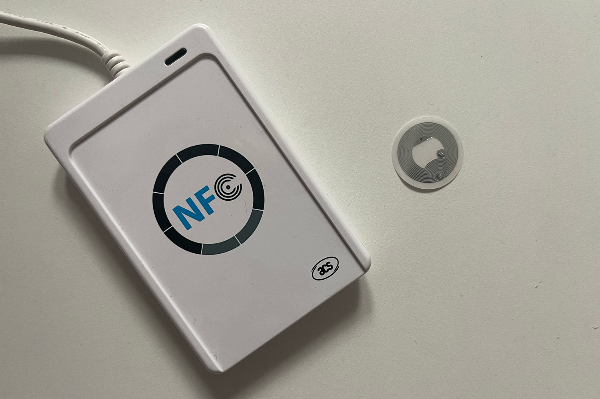

Inventory Management System
About
The Inventory Management System streamlines tool and material tracking on construction sites using NFC technology for real-time monitoring. Each tool is equipped with an NFC chip (NFC-3513-rd/NFC-2004), while workers use EM4100-based IDs for authentication. Integrated with the ACR122U NFC reader/writer, the system enables seamless tool check-in/out, reducing loss, improving accountability, and optimizing resource management.
Technologies & Contributions
• NFC-enabled inventory system
• Integrated ACR122U NFC card reader
• Worker authentication using EM4100 RFID technology
• Scalable back-end hosted on AWS
• Version control workflow with GitHub s
• Created an intuitive admin panel
• Automated low-stock alerts
• Optimized data storage and retrieval
• Reduced tool loss and improved accountability through digital tracking

The Inventory Management System is a powerful solution designed to digitize and automate tool tracking on construction sites. By leveraging NFC technology, the system ensures that every tool movement is accurately recorded in real time, providing site managers with complete visibility into equipment usage. This reduces the risk of misplaced or lost tools while ensuring that workers have quick access to the equipment they need to complete their tasks efficiently.
Each tool is embedded with an NFC chip (NFC-3513-rd/NFC-2004), allowing workers to check tools in and out using their EM4100-based ID cards. The system integrates seamlessly with the ACR122U NFC reader/writer, instantly logging transactions and updating the tool’s status. This not only enhances accountability but also helps supervisors monitor tool availability and prevent unnecessary downtime due to missing equipment.
Administrators can use the system’s intuitive web-based dashboard to track tool locations, update tool statuses, and receive automated alerts when materials are running low. The app also supports worker requests for new tool orders, ensuring that necessary materials are replenished before they become a bottleneck in the project. The back-end, hosted on AWS, provides a scalable and secure environment to handle growing site demands.
By providing a centralized, real-time tracking system, the Inventory Management System has significantly reduced tool loss, improved on-site efficiency, and optimized resource allocation. Since implementation, construction teams have experienced a streamlined workflow, ensuring that projects progress smoothly, on time, and within budget. The system is a testament to how smart technology can revolutionize traditional industries by making them more efficient, secure, and data-driven.